Return To Catalogue - Barry Rlw to Deeside Rlw - Dublin and Drogheda to Great North of Scotland Rlw - Great Northern Rlw to Lancashire and Yorkshire Rlw - London, Brighton and South Coast Rlw to LLanelly Rlw - Lynn and Fakenham Rlw to Midland and Great Northern Rlws - Monmouthshire Rlw & North of Inverness. Rlw - North London to Yarmouth etc. Rlw - unified Scottish design - Great Britain overview
Note: on my website many of the
pictures can not be seen! They are of course present in the
catalogue;
contact me if you want to purchase it.
First type; square stamp, value in a circle, name of company on top and bottom, inscription "FEE FOR CONVEYANCE OF SINGLE POST LETTERS BY RAILWAY" around the center circle. In "A History of Railway Letter Stamps" by H.L'Estrange Ewen (1901), the author claims that this type of stamps was first issued in 2 February 1891.
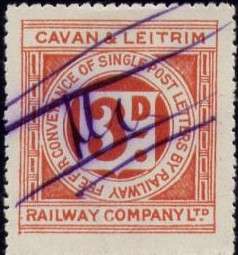
Liverpool, St.Helens & South Lancashire and North British
Railway Company (1906)
Tralee & Dingle Lt Rly & Tramway Company; Ireland 1898
"METROPOLITAN", "METN. AND G.C. JOINT
COMMITTEE" (Metropolitan) and "BRECON &
MERTHYR"
"MIDLAND RAILWAY" (a railway company with the same name
exists in Australia, see: Australia
Railway stamps). And "EASTERN AND MIDLANDS RAILWAY"
North wales & Liverpool Railway Committee
"STRATFORD-UPON-AVON & MIDLAND JUNCTION RLY." 2 p
red on yellow, the only example I've seen on coloured paper.
Great Western Railway, probably the most common stamp encountered
In this design I have seen:
Ballycastle Railway: 2 p blue, 2 p green
Belfast and County Down Railway: 2 p green
Brecon & Merthyr Railway: 2 p green
Caledonian Railway Company: 2 p green
Cambrian Railways: 2 p green (2 types, see above)
Cavan Leitrim and Roscommon Lt. Raily: 2 p green
Cavan & Leitrim Railway Company Ltd: 2 p red, 3 p red, 4 p
red
Cheshire Lines Committee: 2 p green
City of Glasgow Union Railway 2 p green
Cleator & Workington Junction Railway; 2 p green
Cockermouth, Keswick & Penrith Railway: 2 p green
Cork & Macroom Direct Railway: 2 p blue
Donegal Railway Company: 2 p green
Dublin & South Eastern Railway: 2 p green, 4 p green, '3d.'
(red) on 2 p green
Dunbarton & Balloch Joint Line: 2 p green
Dundee and Anbroath Joint Railway: 2 p green
East London Railway: 2 p red
Eastern and Midlands Railway: 2 p green
Finn Valley Railway Company: 2 p green
The Furness Railway: 2 p green
Garstang & Knot End Railway: 2 p green
Great Central & North Staffordshire Ry.Com.: 4 p green, '4'
(blue) on 3 p green, '4' (black) on 3 p green
Great Central Railway Company: 3 p green, 4 p green
Great Eastern Railway: 2 p green
Great Northern Railway: 2 p green
Great North of Scotland Railway: 2 p green
Great Southern and Western Railway: 2 p green
Great Western: 2 p green, 4 p green.
Gt. Central & Midland Joint Committee; 4 p green, '4' on 3 p
green
"GW&GCJT" on Great Western Railway: 2 p green
the Highland Railway Company: 2 p green
Hull & Barnsley Company: 2 p green
Invergarry and Fort-Augustus Ry: 2 p green
Kanturk & Newmarket Railway Company: 2 p green
Knott End Railway: 2 p green
Isle of Wight Central Railway: 3 p on 2 p green
Lancashire & Yorkshire Rly: 2 p green, 2 p red, 'Threepence'
(violet) on 2 p green, 3 p green
Liverpool, St.Helens & South Lancashir 2 p green.
London and North Western Railway: 2 p green
London, Chatham and Dover Railway: 2 p green
London Brighton and South Coast Railway: 2 p green, '4d' (blue)
on 3 p green
London & North Eastern Railway: 4 p green
London, Tilbury & Southend Railway: 2 p green
Manchester South Junc. & Altrincham Ry: 2 p green
Metn. and G.C. Joint Committee: 2 p blue
Metropolitan & G.C.J.Committee: 3 p green
Metropolitan Railway: 2 p red, 3 p red
Midland Railway: 2 p green,
Midland & South Western Junction Railway: 2 p green
Neath and Brecon Railway: 2 p green
North British Railway Company: 2 p green, 4 p green
North Eastern Railway: '3d.' (red) on 2 p green, 4 p green
North London Railway: 2 p green
North Staffordshire Railway: 2 p green
North Wales & Liverpool Railway Committee: 2 p green
Oldham, Ashton & Guide Bridge Rly: 2 p green
Pembroke & Tenby Railway: 2 p green
Portpatrick & Girvan Joint Line: 2 p green
Portpatrick & Wigtownshire Railways: 2 p green
Rhondda & Swansea Bay Railway: 2 p green
Rhymney Railway: 2 p green
Severn and Wye Joint Railway: 2 p green
Sheffield & Midland Railways Committee: 2 p green
Shropshire & Montgomeryshire Railway: 2 p red
Sligo, Leitrim and Northern Countries Railway: 2p green, 2 p
blue, 2 p red
So: West & Mid Rly Co's Som: & Dor: Joint Line: 2 p green
South Eastern Railway: 2 p green
South Eastern & Chatham Railway: 2 p green, '4d' on 3 p olive
Southern & L.M.S.Ry.Co Som. & Dorset Joint Line: 4 p
green
Southern Railway: 4 p green
Southwold Railway: 2 p green
Stratford Upon Avon & Midland Junction Rly: 2 p red on yellow
Taff Vale Railway: 2 p green
Tralee & Dingle Lt Rly & Tramway Company: 2 p green
Waterford and Tramore Railway: 2 p green
Waterford and Limerick Railway: 2 p green
Waterford, Limerick & Western Railway: 2 p green
West Clare Railway Company: 2 p green
West Lancashire Railway: 2 p green
Wrexham, Mold and Connah's Quay Ry.: 2 p green
A very similar label from South Eastern & Chatham Railway.
The Talylynn Railway labels were probably used for philatelic
purposes; here such a label from 1969.
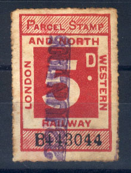
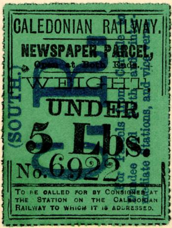
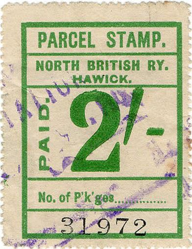
For stamps in similar design (mainly Scottish Railways), click here.
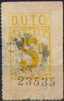
Another label from this company from 1895(?)
This stamp is a parcel delivery stamp issued by the Dublin United Tramways Company.
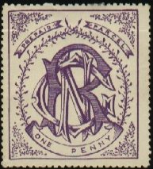
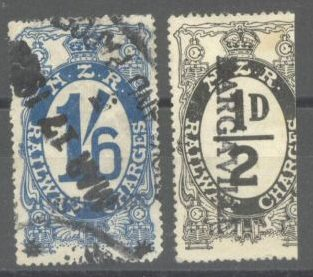
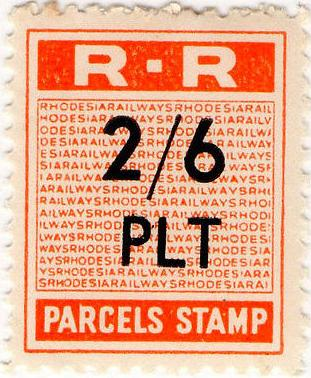
"R.R PARCELS STAMP" from Rhodesia.
"Walter Morley's Catalogue and Price List or
the Stamps of Great Britain" 1897 (only text, no images)
"Railway Newspaper and Parcel Stamps of the United Kingdom
Issued from 1855 to october 1906" compiled by H. L'Estrange
Ewen
"A History of Railway Letter Stamps" by H.L'Estrange
Ewen (1901) (available at http://www.archive.org).
"The Railway Letter Stamps of Great Britain 1891-1941 Part
3" by A.J. Ecclestone and Sydney R. Turner (1963)
"The Railway and Airway Letter Stamps of the British Isles
1891-1971" by Capt. H.T. Jackson F.R.P.S.,L.
"The Railway Letter Posts of Great Britain" Part 1
General History, by H.T. Jackson (Published by The Railway
Philatelic Group)
"22 Wood St. GEORGE GRIFFITHS", 3 p black on lilac and
6 p black on blue
In the above design exist:
1) With inscription "Head office 20 Cases
St.": 1 p black on yellow, 2 p red, 3 p black on red, 4 p
black on green, 6 p black on blue,
2) With inscription "Head office 6 Wood
St." with a monogram at the foot with an "&"
in the center: 2 p red, 3 p black, 3 p black on lilac, 4 p black
on green, 6 p black on blue and 1 Sh blue,
3) With inscription "Head office 6 Wood
St." with a "&" removed from monogram at the
foot: 3 p black and 1 Sh black.
4) Different type with value in straight label
at the bottom: 3 p black on red, 4 p black on green, 1 Sh black,
4 p black and 6 p black on blue
5) With date on stamp 3 p black on red (1887,
1888, 1889, and 1890) and 4 p black on green (1890)
6) Luggage and Parcel Express 42 and 44 Wood
Street: 4 p blue
"PARCELS AND LUGGAGE COMPANY LIVERPOOL" 4 p blue on
yellow
1 p red (imperforate or perforated, with or without control number) 2 p black (perforated, without control number)
The 1 p stamp was supposed to be pasted on parcels of up to 7 pounds in weight. The company stopped operations in 1866.
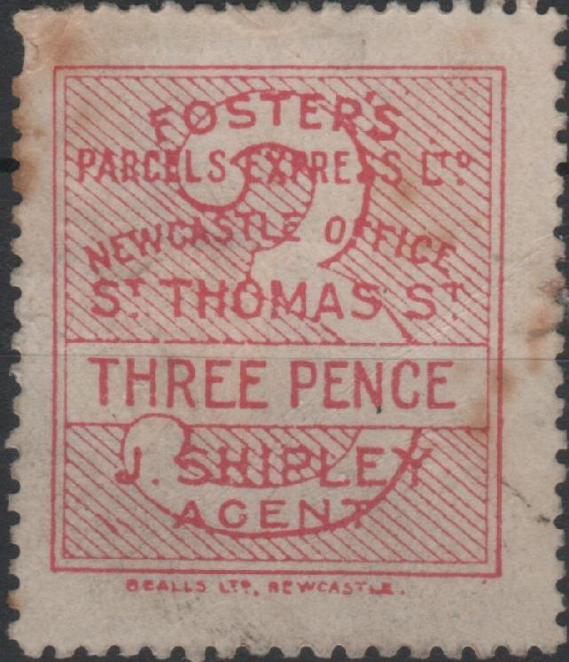
"FOSTER'S PARCEL EXPRESS LTD NEWCASTLE OFFICE St THOMAS St
J.SHIRLEY AGENT", also with "30 PRUDHOE St W.JOHNSON
AGENT"
"FRANK STAMP THE MANCHESTER PARCEL DELIVERY"; 2 p red
and 3 p blue. A 1 p black, 4 p green, 6 p yellow and 1 Sh violet
should also exist.
"PREPAID PARCEL STAMP SUTTON & Co CARRIERS
MANCHESTER"; I've also seen a 2 p red and a 6 p brown in
this design.
"MARSHALL BROS PARCEL EXPRESS 24 TRINITY STREET LEEDS"
2 p black on blue (issued 1895?).
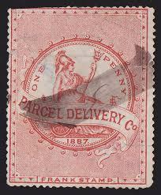
London Transport Executive Prepaid Newspaper Parcel, the London
& North Eastern Railway issued very similar labels.
"BLACKPOOL CORPORATION TRANSPORT W.LUFF GENERAL
MANAGER": 6 p blue. This appears to be a Tramroad Company.
General Manager Walter Luff arrived in 1933, thus this label must
be issued after that date. I've also seen a 1 p red and a 8 p
orange in this design (both with W.Luff). I've also seen a 2 p
red with "J.C.FRANKLIN" as general manager.
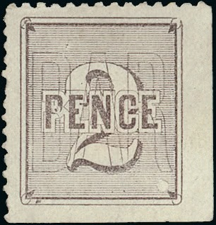
A label very similar to the Great North of Scotland Railway
parcel and newspaper stamps.
{kind=link}
{kind=link}
{kind=link}
{kind=link}
{kind=link}
{kind=link}
{kind=link}
{kind=link}